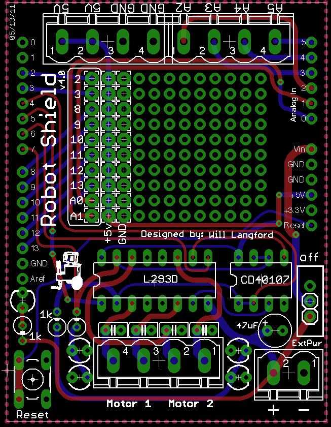
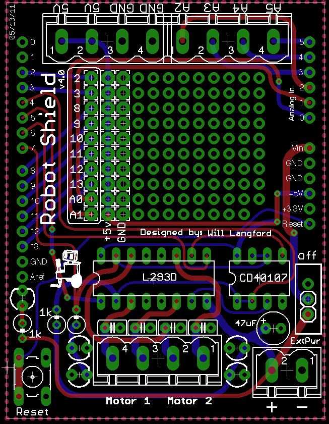
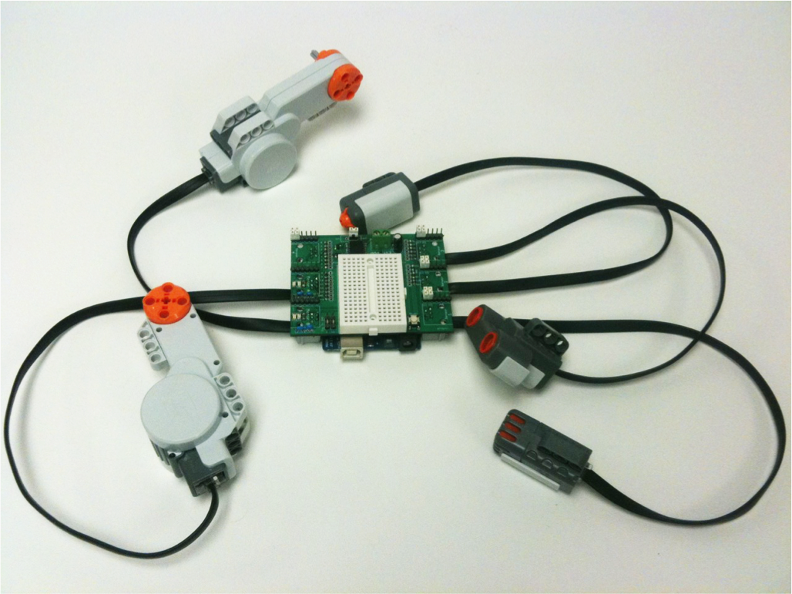
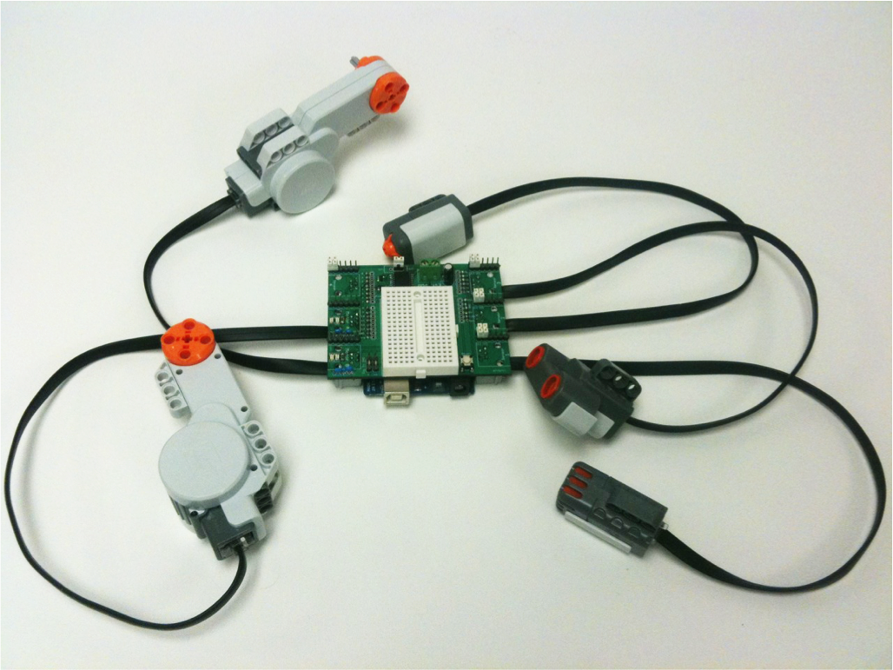

← Will Makes Things.

3D Printed Sumobots

In Winter 2010 I rallied members of my robotics club to design and build 3D printed sumobots with me. Over winter break I designed the main chassis of the robot and let club members design and 3D print their own front-scoops (the front section of the robot). In February we all got together and put the robots together. The Tufts Web Communications Blog wrote a short article about our mini-competition and made this video:
The sumobots themselves are pretty simple. They've got two DC motors, an Arduino, some distance sensors, line sensors, and a custom designed robotics shield for the Arduino. You can download the 3D printed parts from Thingiverse.

The "Arduino Robot Shield" is a custom Arduino shield I've designed to make building robots (such as the sumobot) super easy. It includes all the additional circuitry needed to run two (relatively) low-power DC motors as well as screw terminals for inputs and outputs.

It's gone through a bunch of iterations since Winter 2010 and I think has finally settled on a stable design (v4.0).
 

I designed a derivative of the robot shield for use in a mechatronics course I worked as a teaching assistant for. The students needed a way to quickly and easily interface Lego NXT components (sensors/motors) with the Arduino. The Arduino2NXT Shield does just this by including all of the H-bridge functionality of the Robot Shield but with a dedicated breadboard space and NXT connection terminals for motors and sensors.
 
